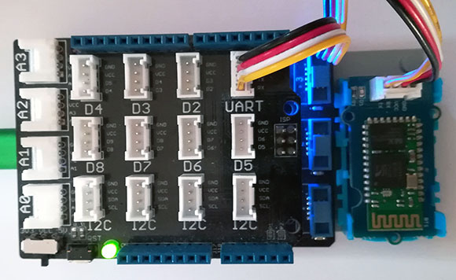

Version: 0.8.0
Grove SerialBluetooth3 is connected as followed on Netduino 3:

| Grove Rtc | Mainboard |
|---|---|
| UART Socket | UART Socket |
using System;
using System.Diagnostics;
using System.Runtime.InteropServices;
using System.Threading;
using Bauland.Grove;
using Bauland.Pins;
using GHIElectronics.TinyCLR.Pins;
namespace TestSerialBluetooth3
{
static class Program
{
private static SerialBluetooth3 _bluetooth3;
private const string RemoteDeviceAddress= "000EEACF35DC";
static void Main()
{
// Config Hardware
Config();
// Config Bluetooth module
SetupBluetoothModule();
// Setup events
_bluetooth3.DataReceived += _bluetooth3_OnDataReceived;
_bluetooth3.Connected += _bluetooth3_Connected;
_bluetooth3.Disconnected += _bluetooth3_Disconnected;
_bluetooth3.ConnectionFailed += _bluetooth3_ConnectionFailed;
_bluetooth3.ConnectionStarted += _bluetooth3_ConnectionStarted;
_bluetooth3.ScanDevice += _bluetooth3_ScanDevice;
_bluetooth3.ScanEnded += _bluetooth3_ScanEnded;
_bluetooth3.ScanStarted += _bluetooth3_ScanStarted;
// Set as Master, this line start message pump
var master = _bluetooth3.MasterMode;
master.Scan();
while (true)
{
Thread.Sleep(20);
}
}
private static void _bluetooth3_ScanStarted(SerialBluetooth3 sender)
{
Debug.WriteLine("Scan started...");
}
private static void Config()
{
switch (DeviceInformation.DeviceName)
{
case "netduino3":
// Grove SerialBluetooth3 module is connected on UART port of Netduino 3 with base shield
_bluetooth3 =
new SerialBluetooth3(Netduino3.UartPort.Uart6, BaudRate.BaudRate9600);
break;
case "G80":
// Grove SerialBluetooth3 module is connected on UART port of FEZ Panda III with base shield
_bluetooth3 =
new SerialBluetooth3(FEZPandaIII.UartPort.Usart1, BaudRate.BaudRate9600);
break;
}
if (_bluetooth3 == null)
throw new ArgumentNullException(nameof(_bluetooth3), "_bluetooh is not initialized correctly.");
}
private static void SetupBluetoothModule()
{
Debug.WriteLine("Default: " + _bluetooth3.RestoreDefault().Result);
Debug.WriteLine("Present: " + _bluetooth3.IsPresent);
// Defaults values, just to remember
_bluetooth3.Name = "HMSoft";
_bluetooth3.Pin = "1234";
Debug.WriteLine("Name: " + _bluetooth3.Name);
Debug.WriteLine("Pin code: " + _bluetooth3.Pin);
// Configure Notification to have info on connection/disconnection (false as default)
_bluetooth3.Notification = true;
Debug.WriteLine("Notification: " + _bluetooth3.Notification);
Debug.WriteLine("GetVersion: " + _bluetooth3.Version);
Debug.WriteLine("QueryAddress: " + _bluetooth3.Address);
Debug.WriteLine("LedMode: " + _bluetooth3.LedMode);
}
private static void _bluetooth3_ScanEnded(SerialBluetooth3 sender)
{
Debug.WriteLine("Scan ended.");
sender.MasterMode.Connect(RemoteDeviceAddress);
}
private static void _bluetooth3_ScanDevice(SerialBluetooth3 sender, string macAddress)
{
Debug.WriteLine("Device found: " + macAddress);
}
private static void _bluetooth3_ConnectionStarted(SerialBluetooth3 sender)
{
Debug.WriteLine("# Connection started...");
}
private static void _bluetooth3_ConnectionFailed(SerialBluetooth3 sender)
{
Debug.WriteLine("# Connection has failed.");
// Try again
sender.MasterMode.Connect(RemoteDeviceAddress);
}
private static void _bluetooth3_Disconnected(SerialBluetooth3 sender)
{
Debug.WriteLine("# Disconnnected");
}
private static void _bluetooth3_Connected(SerialBluetooth3 sender)
{
Debug.WriteLine("# Connnected");
sender.SendString("Hello !");
}
private static void _bluetooth3_OnDataReceived(SerialBluetooth3 sender, string data)
{
Debug.WriteLine("# Data:" + data);
}
}
}